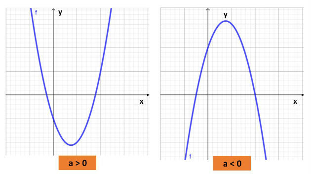

A função quadrática, também chamada de função polinomial de 2º grau, é uma função representada pela seguinte expressão: f(x) = ax2 + bx + c. Onde a, b e c são números reais e a ≠ 0.
f(x) = 2x2 + 3x + 5, sendo, a = 2 b = 3 c = 5
Nesse caso, o polinômio da função quadrática é de grau 2, pois é o maior expoente da variável.
Determine a, b e c na função quadrática dada por: f(x) = ax2 + bx + c, sendo:
f (-1) = 8
f (0) = 4
f (2) = 2
Primeiramente, vamos substituir o x pelos valores de cada função e assim teremos:
f (-1) = 8 a (-1)2 + b (–1) + c = 8 a - b + c = 8 (equação I)
f (0) = 4 a . 02 + b . 0 + c = 4 c = 4 (equação II)
f (2) = 2 a . 22 + b . 2 + c = 2 4a + 2b + c = 2 (equação III)
Pela segunda função f (0) = 4, já temos o valor de c = 4.
Assim, vamos substituir o valor obtido para c nas equações I e III para determinar as outras incógnitas (a e b):
(Equação I) a - b + 4 = 8 a - b = 4 a = b + 4
Já que temos a equação de a pela Equação I, vamos substituir na III para determinar o valor de b:
(Equação III) 4a + 2b + 4 = 2 4a + 2b = - 2 4 (b + 4) + 2b = - 2 4b + 16 + 2b = - 2 6b = - 18 b = - 3
a - b + c = 8 a - (- 3) + 4 = 8 a = - 3 + 4 a = 1
Sendo assim, os coeficientes da função quadrática dada são: a = 1 b = - 3 c = 4
As raízes ou zeros da função do segundo grau representam aos valores de x tais que f(x) = 0. As raízes da função são determinadas pela resolução da equação de segundo grau:
f(x) = ax2 +bx + c = 0
Encontre os zeros da função f(x) = x2 – 5x + 6.
Sendo
a = 1
b = – 5
c = 6
Substituindo esses valores na fórmula de Bhaskara, temos:Portanto, as raízes são 2 e 3.
Observe que a quantidade de raízes de uma função quadrática vai depender do valor obtido pela expressão: Δ = b2 – 4. ac, o qual é chamado de discriminante.
Assim,
O gráfico das funções do 2º grau são curvas que recebem o nome de parábolas. Diferente das funções do 1º grau, onde conhecendo dois pontos é possível traçar o gráfico, nas funções quadráticas são necessários conhecer vários pontos.
A curva de uma função quadrática corta o eixo x nas raízes ou zeros da função, em no máximo dois pontos dependendo do valor do discriminante (Δ). Assim, temos:
Existe ainda um outro ponto, chamado de vértice da parábola, que é o valor máximo ou mínimo da função. Este ponto é encontrado usando-se a seguinte fórmula:
É possível identificar a posição da concavidade da curva analisando apenas o sinal do coeficiente a. Se o coeficiente for positivo, a concavidade ficará voltada para cima e se for negativo ficará para baixo, ou seja:
Assim, para fazer o esboço do gráfico de uma função do 2º grau, podemos analisar o valor do a, calcular os zeros da função, seu vértice e também o ponto em que a curva corta o eixo y, ou seja, quando x = 0.
A partir dos pares ordenados dados (x, y), podemos construir a parábola num plano cartesiano, por meio da ligação entre os pontos encontrados.